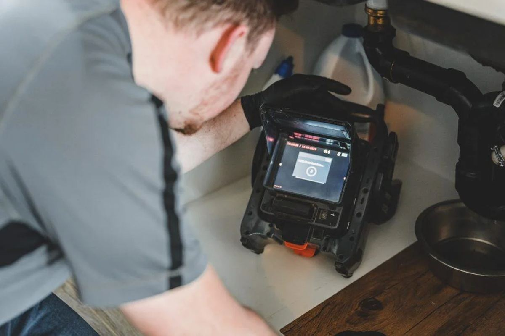

Urgence plomberie 24/7
Que faire en cas d'urgence de plomberie ?
Une fuite soudaine, un tuyau éclaté ou un refoulement d'égout ne préviennent jamais à l'avance. Ces situations peuvent causer des dégâts d'eau importants en quelques minutes seulement, autant sur les murs, les planchers que sur les biens personnels. Savoir réagir rapidement, avant même l'arrivée du plombier, fait souvent toute la différence entre une réparation mineure et une rénovation complète.

Les signes d'une urgence de plomberie
- Une fuite d'eau visible qui ne s'arrête pas, même après avoir fermé le robinet concerné
- Une odeur d'égout persistante à l'intérieur de la maison
- Un refoulement d'eau dans les drains, la baignoire ou le sous-sol
- Une absence totale d'eau chaude ou froide dans toute la résidence
- Un bruit de sifflement ou de cognement dans la tuyauterie
Les bons gestes en attendant notre arrivée
Après avoir coupé l'alimentation en eau, éloignez les objets de valeur et les appareils électriques de la zone touchée. Si le dégât d'eau atteint un plafond ou un mur, évitez de rester en dessous. Prenez quelques photos de la situation : elles seront utiles pour votre assureur si une réclamation est nécessaire. Enfin, évitez d'utiliser des produits chimiques déboucheurs avant notre inspection : ils peuvent parfois masquer la vraie cause du problème ou endommager davantage la tuyauterie.
Pourquoi appeler Plomberie Abel
Notre équipe mobile reste disponible 24 heures sur 24, 7 jours sur 7, incluant les soirs, les week-ends et les jours fériés. Dès votre appel, nous évaluons la situation par téléphone pour vous guider immédiatement, puis nous nous déplaçons avec l'équipement nécessaire pour diagnostiquer et réparer sur place dans la grande majorité des cas. Un devis clair vous est toujours communiqué avant le début des travaux, et chaque réparation est garantie par écrit.
Zone d'intervention d'urgence
Nos équipes couvrent Montréal et les environs immédiats : Laval, Longueuil, la Rive-Sud et la Rive-Nord. Consultez notre page zone desservie pour vérifier la disponibilité dans votre secteur, ou composez directement le 438-765-1485.
🎵 Notre musique d'attente téléphonique
Un aperçu de ce que vous entendez le temps que votre appel soit pris en charge par notre répartiteur.